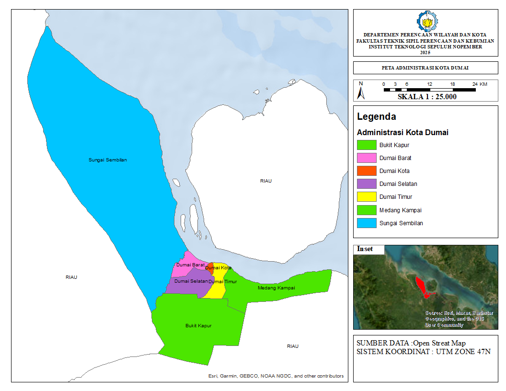

LATAR BELAKANG ANALISIS
Perkembangan industri menjadi salah satu penggerak utama pembangunan ekonomi nasional. Di Indonesia, transformasi ekonomi dari sektor agraris menuju industri semakin nyata, terutama di kawasan-kawasan dengan potensi lokasi strategis seperti Kota Dumai. Sebagai kota pelabuhan yang berada di pesisir timur Pulau Sumatera, Dumai memiliki posisi penting dalam rantai logistik nasional dan internasional, serta didukung oleh infrastruktur pelabuhan dan aksesibilitas terhadap jalur distribusi.
Namun demikian, percepatan pembangunan industri tidak terlepas dari tantangan utama, yakni ketersediaan lahan yang sesuai dan berkelanjutan untuk pengembangan kawasan industri. Permasalahan seperti alih fungsi lahan, tumpang tindih peruntukan ruang, serta ketidaksesuaian dengan karakteristik biofisik wilayah seringkali muncul dalam proses perencanaan spasial kawasan industri. Oleh karena itu, diperlukan pendekatan berbasis data spasial yang mampu memadukan berbagai kriteria lingkungan, infrastruktur, serta aspek kebijakan tata ruang secara sistematis dan terukur.
Salah satu metode yang digunakan untuk menjawab permasalahan tersebut adalah pendekatan Multi-Criteria Analysis (MCA), khususnya berbasis Sistem Informasi Geografis (SIG). Metode ini memungkinkan penggabungan berbagai parameter spasial seperti kemiringan lahan, jarak ke jaringan jalan dan pelabuhan, keberadaan sumber daya air, serta penggunaan lahan eksisting untuk menghasilkan peta kesesuaian lahan secara komprehensif. Pendekatan ini telah terbukti efektif dalam mengidentifikasi zona-zona yang paling sesuai untuk pengembangan industri dengan tetap mempertimbangkan aspek keberlanjutan.
Gambaran Umum Wilayah

Kota Dumai adalah salah satu kota yang berada di Provinsi Riau, Indonesia, yang memiliki peran strategis sebagai kota pelabuhan dan industri. Secara geografis, Dumai terletak di pesisir timur Pulau Sumatera, berbatasan langsung dengan Kabupaten Rokan Hilir di sebelah utara dan barat, Kabupaten Bengkalis di selatan, serta Selat Malaka di sebelah timur. Kota Dumai memiliki luas wilayah sekitar 2.039,35 km², menjadikannya salah satu kota dengan wilayah terluas di Indonesia. Kondisi geografis ini menjadikan Dumai sebagai wilayah yang potensial dalam pengembangan kawasan industri, pelabuhan, serta pengelolaan sumber daya alam, terutama minyak dan gas bumi serta kelapa sawit.
Secara administratif, Kota Dumai terdiri atas 7 kecamatan, yaitu 1. Dumai Kota 2. Dumai Barat 3. Dumai Timur 4. Dumai Selatan 5. Medang Kampai 6. Sungai Sembilan 7. Bukit Kapur, Masing-masing kecamatan memiliki karakteristik wilayah dan potensi yang berbeda-beda, mulai dari kawasan permukiman, industri, pelabuhan, hingga wilayah hutan dan pesisir. Misalnya, Kecamatan Sungai Sembilan dikenal sebagai kawasan industri minyak sawit dan kehutanan, sementara Dumai Kota menjadi pusat pemerintahan dan aktivitas perdagangan utama. Dengan pertumbuhan ekonomi dan urbanisasi yang cukup pesat, Kota Dumai menghadapi tantangan dalam pengelolaan tata ruang dan lingkungan hidup. Oleh karena itu, diperlukan perencanaan wilayah yang komprehensif dan berkelanjutan guna mengoptimalkan pemanfaatan ruang serta meningkatkan kesejahteraan masyarakat Dumai di masa depan.
Metode dan Analisa Penelitian
Penyusunan sistem informasi perencanaan wilayah dilakukan melalui pendekatan terpadu yang menggabungkan pengumpulan data spasial dan non-spasial, pengolahan basis data geospasial, serta analisis spasial berbasis SIG (Sistem Informasi Geografis). Data dikumpulkan dari berbagai sumber resmi seperti instansi pemerintah, hasil survei lapangan, citra satelit, dan peta tematik, kemudian diolah melalui proses digitasi, georeferensi, dan integrasi atribut untuk membentuk layer-layer informasi yang seragam dan siap dianalisis. Analisis spasial dilakukan dengan menggunakan teknik overlay, buffer, dan zonasi untuk mengidentifikasi potensi wilayah, pola penggunaan lahan, serta isu strategis seperti konflik ruang dan keterbatasan daya dukung. Hasil dari proses ini berupa peta-peta tematik yang menggambarkan struktur ruang, pola ruang, kawasan lindung dan budi daya, serta rekomendasi arahan pengembangan yang terintegrasi ke dalam platform sistem informasi berbasis web.
Klik tombol dibawah untuk melihat
Hasil
Berdasarkan analisis yanng telah dilakukan hasil analisis menunjukkan 3 kategori, pertama rekomendasi,kedua rekomendasi bersyarat, dan yang terakhir tidak direkomendasikan
Klik tombol dibawah untuk melihat
Kesimpulan
Lahan Rekomendasi merupakan kawasan dengan kondisi eksisting yang dapat diubah menjadi lahan industri. Kawasan ini memperoleh skor 21–30 berdasarkan hasil analisis kesesuaian lahan serta memiliki kondisi eksisting yang dapat dikonversi meliputi semak belukar, lahan terbuka, dan ladang serta memiliki luasan lebih dari 200 ha
Lahan Rekomendasi bersyarat merupakan kawasan dengan kondisi eksisting yang dapat diubah menjadi kawasan industri namun memiliki beberapa syarat dalam membuka lahan. Kawasan ini memperoleh skor 16-20 berdasar hasil analisis kesesuaian lahan serta memiliki kondisi eksisting berupa perkebunan, ladang, semak belukar, dan memiliki luasan kurang dari 200 ha
Lahan Tidak direkomendasikan merupakan kawasan dengan kondisi eksisting yang tidak seharusnya diubah. Kawasan ini memperoleh skor 6-15, serta memiliki kondisi eksisting berupa area sungai, permukiman, hutan rimba, serta kawasan kebun, dan semak belukar yang luasannya di bawah 200 ha